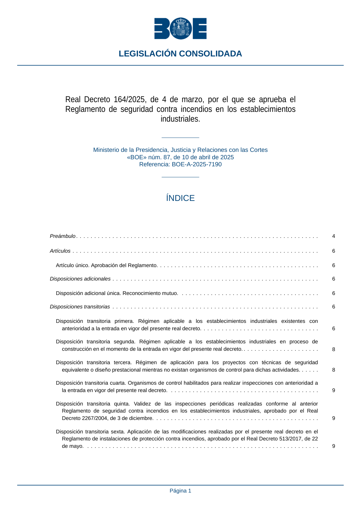

RSCIEI · edición 2025-04-10 · capa asociada
Documento RSCIEI-asociada · SHA-256 del PDF 85aa0af25d51e5b58d8975a4eefbf76d3f57a8933445cfe814ae9c4818a2e3e7
Página física 1 de 108.
Copia fiel del PDF fuente · Fuente oficial
Ficha de la disposición en la fuente oficial
Texto extraído y reorganizado: Basado en datos de la Agencia Estatal Boletín Oficial del Estado. PDF reproducido: Fuente de los datos: Agencia Estatal Boletín Oficial del Estado.
Formato: Texto de la página (Markdown)
Real Decreto 164/2025, de 4 de marzo, por el que se aprueba el Reglamento de seguridad contra incendios en los establecimientos industriales. Ministerio de la Presidencia, Justicia y Relaciones con las Cortes «BOE» núm. 87, de 10 de abril de 2025 Referencia: BOE-A-2025-7190 ÍNDICE Preámbulo . . . . . . . . . . . . . . . . . . . . . . . . . . . . . . . . . . . . . . . . . . . . . . . . . . . . . . . . . . . . . . . . . . . 4 Artículos . . . . . . . . . . . . . . . . . . . . . . . . . . . . . . . . . . . . . . . . . . . . . . . . . . . . . . . . . . . . . . . . . . . . 6 Artículo único. Aprobación del Reglamento. . . . . . . . . . . . . . . . . . . . . . . . . . . . . . . . . . . . . . . . . . . . . 6 Disposiciones adicionales . . . . . . . . . . . . . . . . . . . . . . . . . . . . . . . . . . . . . . . . . . . . . . . . . . . . . . . . . 6 Disposición adicional única. Reconocimiento mutuo. . . . . . . . . . . . . . . . . . . . . . . . . . . . . . . . . . . . . . . 6 Disposiciones transitorias . . . . . . . . . . . . . . . . . . . . . . . . . . . . . . . . . . . . . . . . . . . . . . . . . . . . . . . . . 6 Disposición transitoria primera. Régimen aplicable a los establecimientos industriales existentes con anterioridad a la entrada en vigor del presente real decreto. . . . . . . . . . . . . . . . . . . . . . . . . . . . . . . . . 6 Disposición transitoria segunda. Régimen aplicable a los establecimientos industriales en proceso de construcción en el momento de la entrada en vigor del presente real decreto. . . . . . . . . . . . . . . . . . . . . . 8 Disposición transitoria tercera. Régimen de aplicación para los proyectos con técnicas de seguridad equivalente o diseño prestacional mientras no existan organismos de control para dichas actividades. . . . . . 8 Disposición transitoria cuarta. Organismos de control habilitados para realizar inspecciones con anterioridad a la entrada en vigor del presente real decreto. . . . . . . . . . . . . . . . . . . . . . . . . . . . . . . . . . . . . . . . . . 9 Disposición transitoria quinta. Validez de las inspecciones periódicas realizadas conforme al anterior Reglamento de seguridad contra incendios en los establecimientos industriales, aprobado por el Real Decreto 2267/2004, de 3 de diciembre. . . . . . . . . . . . . . . . . . . . . . . . . . . . . . . . . . . . . . . . . . . . . . 9 Disposición transitoria sexta. Aplicación de las modificaciones realizadas por el presente real decreto en el Reglamento de instalaciones de protección contra incendios, aprobado por el Real Decreto 513/2017, de 22 de mayo. . . . . . . . . . . . . . . . . . . . . . . . . . . . . . . . . . . . . . . . . . . . . . . . . . . . . . . . . . . . . . . . . 9 LEGISLACIÓN CONSOLIDADA Página 1
